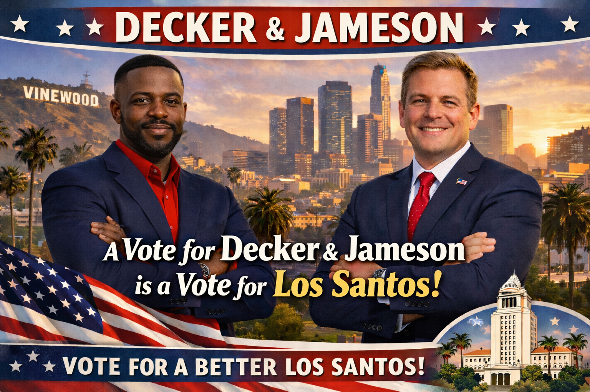
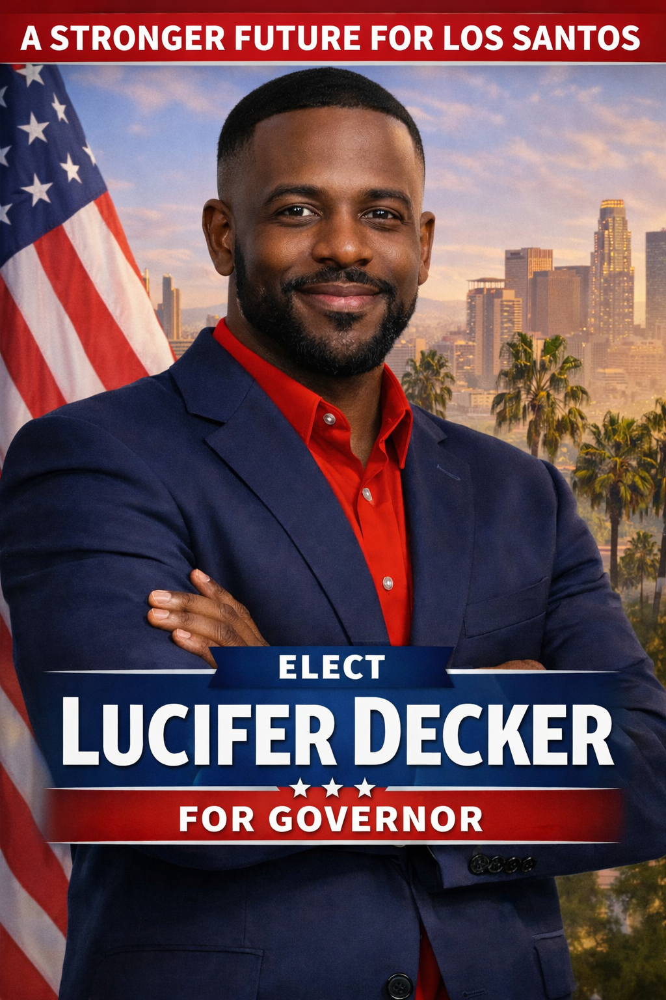
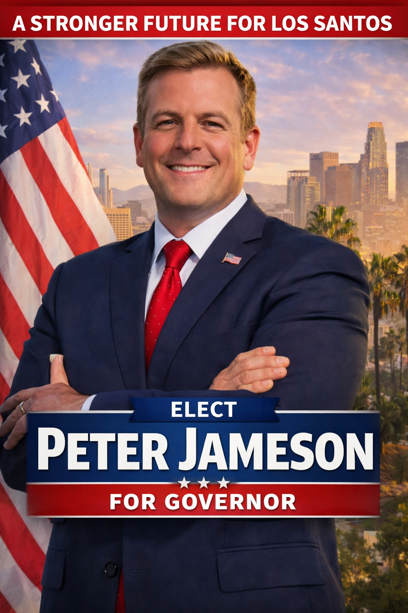
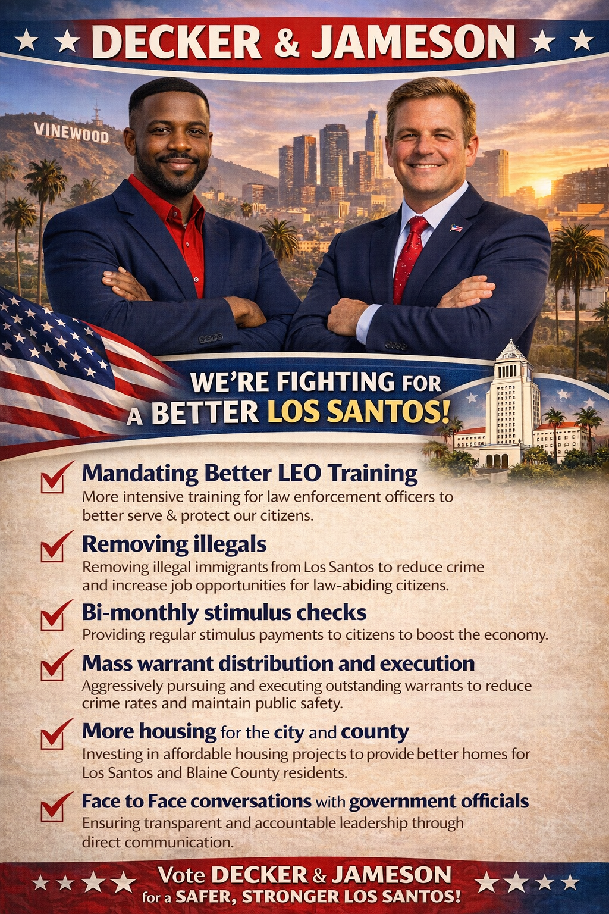

Lucifer Decker is a leader dedicated to strengthening the connection between government and the people it serves. He believes leadership should be built on trust, accountability, and the willingness to face problems directly. With a strong commitment to the community, Decker has made it clear that his priority is creating a government that listens to its citizens and works to solve the challenges they face every day.

Peter Jameson is a leader committed to restoring trust between the government and the people it serves. Throughout his career, he has believed that strong leadership begins with listening to the community and acting in the best interest of its citizens. His dedication to public service comes from a deep belief that government should be transparent, accountable, and focused on real solutions.

Improving LEO training standards and ensuring law enforcement has the resources needed to keep communities safe. This includes stronger coordination between departments and faster response to crime across Los Santos.
Lowering taxes and supporting small businesses so the local economy can grow. Economic policies will focus on creating jobs and ensuring citizens have more opportunities to succeed.
Increasing housing development throughout Los Santos and Blaine County. The goal is to ensure more citizens have access to safe and affordable places to live.
Removing inactive officials and ensuring leaders in positions of power are actively serving the community. Government positions should be held by individuals who are committed to real progress.
Implementing stronger strategies to combat gang activity and organized crime. This includes both law enforcement efforts and community programs to prevent crime before it begins.
Expanding healthcare access so every citizen can receive medical care when they need it. The focus is on building a system that ensures affordability and availability for everyone.
Voting Period: March 16th - 19th
Make your voice heard for Los Santos.
Town halls, public forums, and meet‑and‑greets will be announced soon across Los Santos and Blaine County.
Help us build a better Los Santos. Join the campaign today.
Your support helps us reach more voters and continue fighting for Los Santos.